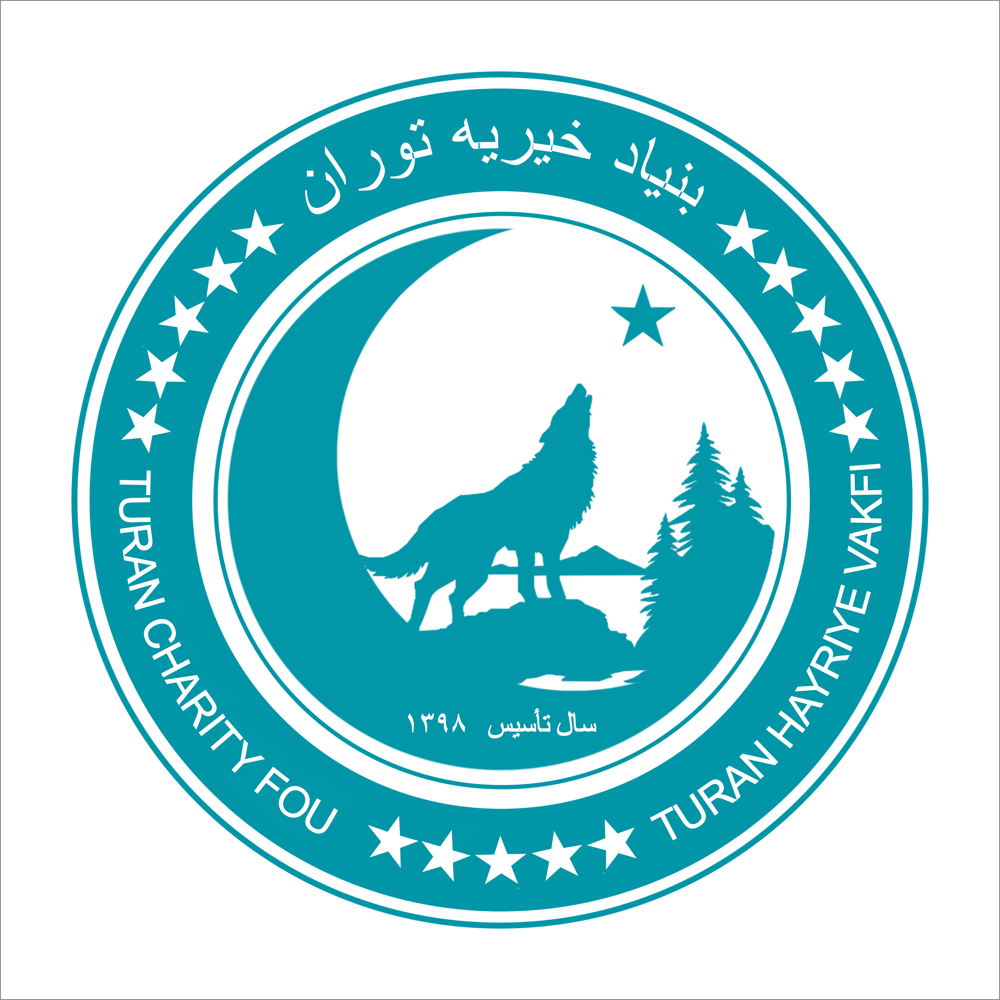

my web site will show you capitals and contrys of turks World (scrool down)
Turk World and information about Turk world
Turkey
Uzbikistan
Turkmenistan
Kyrgyzstan
Kazahstan
Uyghurs
tatarastan
Azerbaijan
in all Turks Contrys they are muslims and in all turks contry there are 300 Million People and turks
capitals
